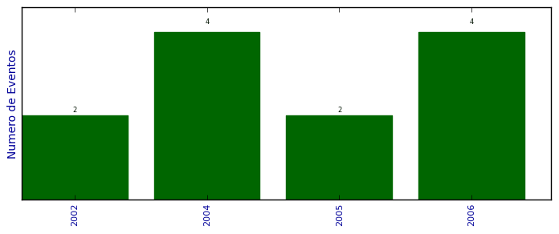

Total de participação em eventos

Número total de itens: 12
2006
| 1. | Administração de BD Relacionais. 2006. (Oficina). |
| 2. | Escola Regional de Banco de Dados. 2006. (Outra). |
| 3. | II Escola Regional de Bancos de Dados. Extensão para a execução de regras através da detecção de eventos temporais. 2006. (Congresso). |
| 4. | Uso de Ferramentas CASE para Banco de Dados. 2006. (Oficina). |
2005
| 1. | IV Simpósio de Informática da Região Centro do Rio Grande do Sul- SIRC. 2005. (Simpósio). |
| 2. | SEPE - IX Simpósio de ensino, pesquisa e extensão.Estudo da biblioteca gráfica OpenGL e implementação de um ambiente virtual interativo. 2005. (Simpósio). |
2004
| 1. | 5º Fórum Internacional Software Livre. 2004. (Congresso). |
| 2. | III Simpósio de Informática da Região Centro - SIRC. 2004. (Simpósio). |
| 3. | SEPE - VIII Simpósio de ensino, pesquisa e extensão.Bancos de Dados Ativos. 2004. (Simpósio). |
| 4. | V Jornada Institucional da Área de Ciências Naturais de Tecnológicas. 2004. (Outra). |
2002
| 1. | 5ª Jornada de Informática Centenarista - 5º JORINFOC. 2002. (Outra). |
| 2. | Semana Linux - Apresentando o S.O. e desenvolvendo aplicações. 2002. (Oficina). |
(*) Relatório criado com produções desde 1999 até HOJE
Data de processamento: 02/04/2014 18:40:01